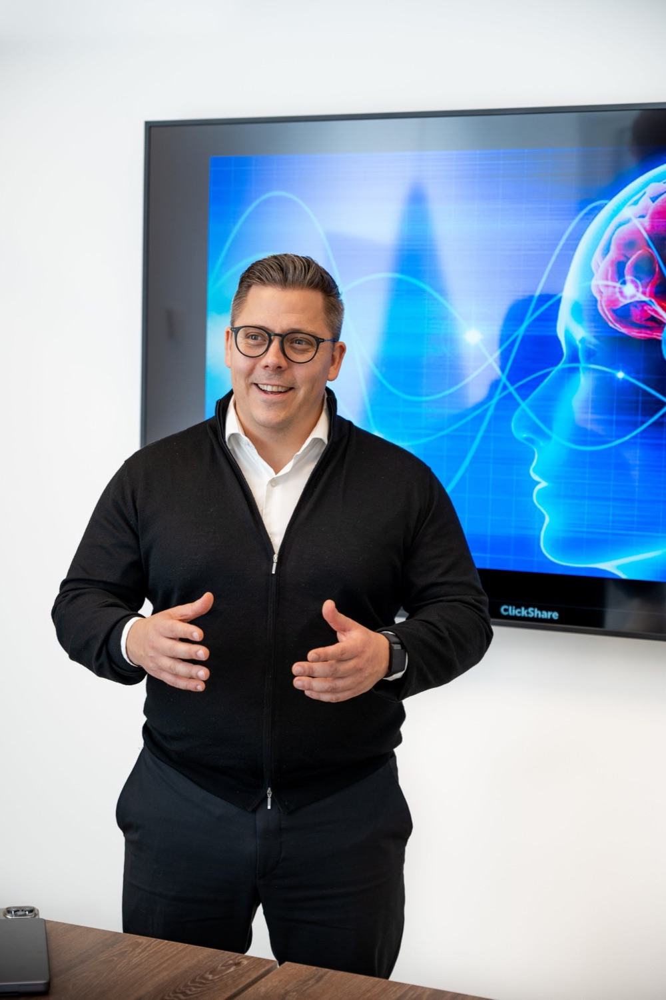
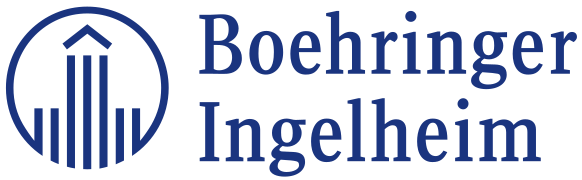
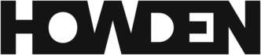
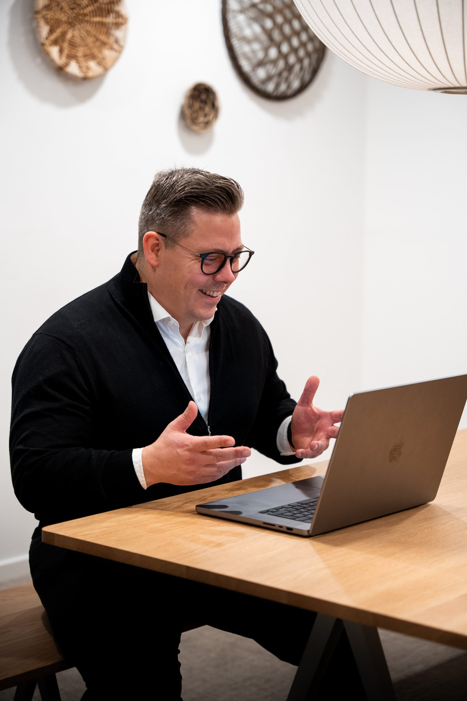

Salgstræning, der bliver siddende
Et kursus på 1 til 3 dage giver teori og modeller. Det ændrer sjældent vaner, der er bygget over mange år. Jeg træner jeres team i 1 til 3 dage og følger op i jeres egne møder over 3, 6 eller 12 måneder.
47.000 kr.ekskl. moms pr. træningsdag · 1 til 3 dage efter jeres behov

Jeg har trænet hold hos



“Uden forankring og implementering er det bare et virkelig dyrt kursus og en peptalk.”
Hvad I kan forvente
Jeg siger det, som det er: efter træningsdagene er der ikke sket den store forandring. Den kommer med opfølgningen, når det bliver trænet på jeres egne møder.
Til gengæld har I et fælles sprog og et sundt fundament. Det gør det nemmere at skalere salgsafdelingen og ansætte flere.
“Der vil være en dybere forståelse for, hvordan I alle taler samme sprog. Og det vil være starten på at kunne bygge noget rigtig sundt.”
Sådan foregår det
- Første møde
Jeg tager det selv og ser på jeres møder, før vi taler om træning.
- 1 til 3 dages træning
I NEO-metoden, med jeres egne samtaler.
- Opfølgning
1 møde hver 2., 3. eller 4. uge, der starter med det, der er sket siden sidst.
- 3, 6 eller 12 måneder
Det vælger I.

Jeg viser det i praksis
På første dag ringer jeg og booker møder live foran holdet.
Da han selv tog kolde opkald og bookede møde foran hele teamet på første opkald, vidste jeg, han var anderledes end de andre ‘salgscoaches’.
Efterfølgende demonstrerede han, hvor overførbart det var i praksis, da han bookede et møde i første forsøg.
Virksomhederne kommer igen
- Sydbank
En pilot med 15 rådgivere og 15 Private Banking-folk mod et andet konsulenthus. Efter 6 måneder: flere nye kunder, højere kundetilfredshed og gladere medarbejdere. Derefter hele område Sønderjylland.
- Boehringer Ingelheim
Startede i Human Health. Efter 3 måneder kom Animal Health med og siden Norge.
- Generaxion
Et kursus for ca. 40 sælgere og 15 mødebookere. Derefter 6 ekstra kursusdage.
- Howden
3,5 dages træning og et samarbejde med 10 måneder mere foran.
- DTU Learn for Life
Valgte mig efter at have undersøgt markedet. Kurser for hele centret og træning af programdirektørerne.
Efterfølgende har vi booket Lasse til 6 ekstra kursusdage for at få vores nye dialog 100% skarp.
Lasses metoder er i dag en integreret del af vores salgsafdelings dagligdag!
Hos os er mødebooking gået fra at være en “varm kartoffel” til noget, vi gerne vil.
Det første møde tager jeg selv
47.000 kr. ekskl. moms pr. træningsdag. Antal dage, rytme og længde aftaler vi på mødet.